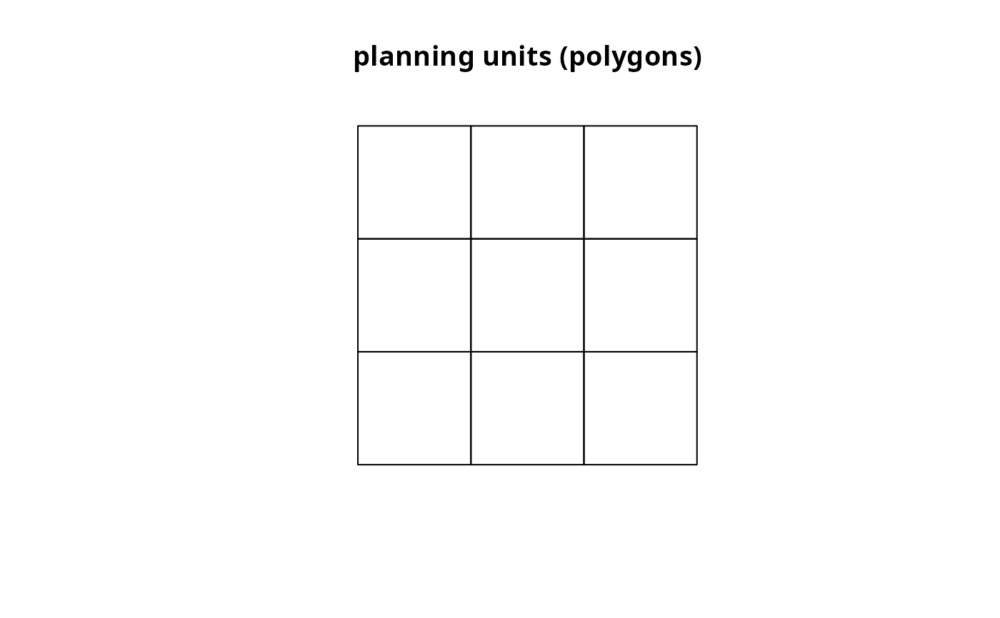

Connectivity matrix
Create a matrix showing the connectivity between planning units. Connectivity is calculated as the average conductance of two planning units multiplied by the amount of shared boundary between the two planning units. Thus planning units that each have higher a conductance and share a greater boundary are associated with greater connectivity.
# S4 method for Spatial,character connectivity_matrix(x, y, boundary_data = NULL, ...) # S4 method for Spatial,Raster connectivity_matrix(x, y, boundary_data = NULL, ...) # S4 method for Raster,Raster connectivity_matrix(x, y, boundary_data = NULL, included = NULL, ...)
Arguments
| x |
|
|---|---|
| y |
|
| boundary_data |
|
| included |
|
| ... | arguments passed to |
Value
dsCMatrix-class sparse symmetric matrix object.
Details
This function returns a dsCMatrix-class
sparse symmetric matrix. Each row and column represents a planning unit.
Cell values represent the connectivity between two planning units. To
reduce computational burden, if argument to x is a
Raster-class object then cells in x that
contain missing (NA) values are omitted from the returned matrix.
Furthermore, all cells along the diagonal are missing values since
a planing unit does not have any share connectivity with itself.
Examples
## load data # planning units data(sim_pu_raster, sim_pu_polygons, sim_pu_lines, sim_pu_points) # here we will use the features' habitat suitabilities as conductances data(sim_features) ## create connectivity matrix using raster planning unit data # extract 9 planning units r <- crop(sim_pu_raster, c(0, 0.3, 0, 0.3)) # extact conductance data for the 9 planning units cd <- crop(r, sim_features[[1]]) # make connectivity matrix cm_raster <- connectivity_matrix(r, cd) # plot data and matrix par(mfrow = c(1,3)) plot(r, main = "planning units") plot(cd, main = "conductivity") plot(raster(as.matrix(cm_raster)), main = "connectivity")## create connectivity matrix using polygon planning unit data # subset 9 polygons ply <- sim_pu_polygons[c(1:2, 10:12, 20:22), ] # make connectivity matrix cm_ply <- connectivity_matrix(ply, sim_features[[1]]) # plot data and matrix par(mfrow = c(1,3)) plot(ply, main = "planning units") plot(sim_features[[1]], main = "conductivity") plot(raster(as.matrix(cm_ply)), main = "connectivity")